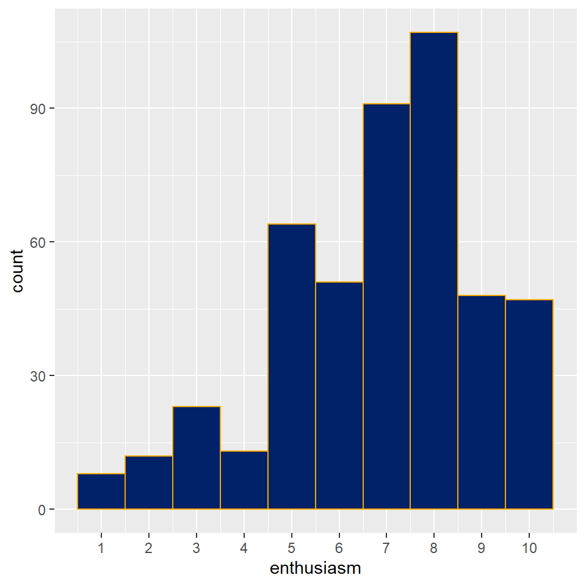
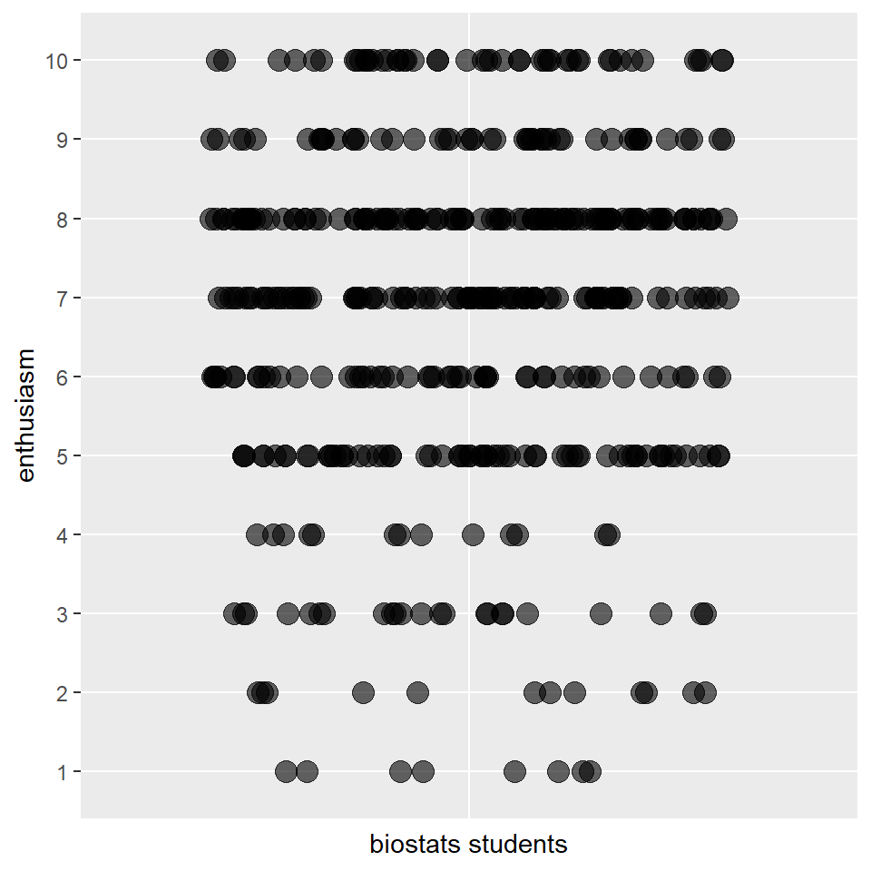
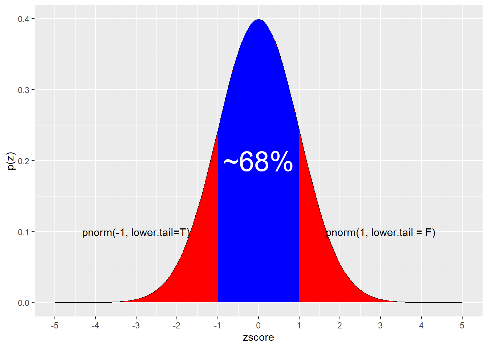

Chapter 10 The Poisson Distribution
library(tidyverse)10.1 Poisson Events
Counts of random, discrete events that occur in blocks of time or space are said to have the property of frequency. They can be modeled by the Poisson distribution. The values of these events are always integers.
For example, the number of times a neuron depolarizes over a fixed period of time would be frequency. The number of cells on which an antigen can be detected that are in a fixed volume of fluid would also be a frequency. The number of facebook friends a random biostats student has would be a frequency.
10.2 dpois
dpois is the Poisson probability mass function in R: \(p(x)=\frac{e^{-\lambda}\lambda^x}{x!}\)
dpois takes as arguments i) the scalar \(x\), and ii) lambda, an average or expectation of the distribution, and returns the value of the probability, or otherwise known as the probability mass, for that scalar. \(x\) can be either a single value, or a vector comprised of many values. We use the latter, conveniently, to produce nice graphs.
For example, assume a neuron, on average, can be expected to depolarize spontaneously 8 times per second. What is the probability it would only depolarize half that number of times?
Use dpois to calculate the probability that a random number of events would occur in a time or space, given some expected average frequency.
dpois(x=4, lambda=8)## [1] 0.05725229Therefore, the probability that a randomly selected neuron would depolarize exactly 4 times per second is 5.72%.
The probability of some frequency we might expect to see is sometimes useful to calculate.
What’s most notable about the the dpois is how it loses symmetry and becomes more skewed as its average (lambda) gets lower.
x <- c(0:25)
lambda <- 8
df <- data.frame(x, px=dpois(x, lambda))
ggplot(df, aes(x=x,y=px)) +
geom_col(fill = "red") +
xlab("x") +
ylab("p(x)") +
labs(title = paste("dpois","(","lambda=", lambda,")"))
10.3 ppois
R’s ppois function is the Poisson cumulative mass function \[p(x)=\sum_{i=0}^{x} \frac{e^{-\lambda}\lambda^i}{i!}\]
This calculates a cumulative probability value for a certain frequency, given the average frequency of the distribution.
Let’s say, for example, that a neuron depolarizes on average 8 times per second. If you took a random measure of depolarization activity, what is the probability that you’d observe a frequency as high as 4 depolarizations per second?
ppois(4, 8, lower.tail=T)## [1] 0.0996324The value of almost 10% is higher than what we determined using the dpois because the ppois is a cumulative function!
What is the probability that you’d observe a frequency of 16 or more depolarizations per second?
To answer this question we have to reverse the function’s default lower.tail argument. As you might suspect, when set with the lower.tail=FALSE argument, as below, the ppois function returns a p-value.
ppois(16, 8, lower.tail=F)## [1] 0.003718021Thus, the probability of observing a frequency twice as high or higher than the average for this distribution is quite low, at about 0.37%!
Here’s the cumulative Poisson distribution for a phenomenon that has an average of 8, over a range of frequency values:
x <- c(0:25)
lambda <- 8
df <- data.frame(x, px=ppois(x, lambda, lower.tail=T))
ggplot(df, aes(x, px)) +
geom_col(fill="red")
It’s probably worth reversing the lower.tail argument to visualize the distribution of p-values for a Poisson
x <- c(0:25)
lambda <- 8
df <- data.frame(x, px=ppois(x, lambda, lower.tail=F))
ggplot(df, aes(x, px)) +
geom_col(fill="red") ## qpois
The qpoisfunction is the inverse of the cumulative Poisson mass function. It takes a probability as an argument and returns a frequency value.
What depolarization frequency can we expect as the 90th percentile for a neuron that has an average frequency of 8 depolarizations per second?
qpois(0.9, 8)## [1] 12Visualized, notice the stair-step pattern, which is diagnostic of discrete probability distributions
p <- seq(0, 1, 0.05)
lambda <- 8
df <- data.frame(p, frequency=qpois(p, lambda, lower.tail=T))
ggplot(df, aes(p, frequency)) +
geom_col(fill="red")10.4 rpois
The rpois function in R is used to generate random Poisson data. It takes arguments of lambda, the average frequency of a population, and the number of random counts to generate.
To simulate a sample of 10 measurements of a neuron that on average depolarize 8 times per sec:
rpois(10, 8)## [1] 9 9 7 6 6 9 10 11 12 6Here’s a histogram of a larger sample. Notice how it isn’t as perfect as the Poisson distribution would suggest. That’s because models are perfect, but samples are not. Even computer-generated samples! Also notice the low but detectable frequency of extreme values..frequencies higher than 20, by random chance.
df <- data.frame(s=rpois(10000, 8))
ggplot(df, aes(s)) +
geom_histogram(binwidth=1, color="red")
10.5 Overdispersion
It’s very common to observe systems that disobey the Poisson. In other words, these are systems that are discrete counts in time or space, and thus whose very nature is frequency. But yet they are poorly fit by the Poisson distribution model.
For example, the two graphs below. The first is a distribution of the counts of facebook friends of biostats students. Their average number of friends is 610. The second is a based upon a Poisson distribution whose lambda is 610.
The model obviously is a poor fit for the data. Models are perfect, data are not.
The friends distribution is said to be over-dispersed. The reason for this overdispersion is likely that it is a more complex system than what a Poisson would assume. A key assumption for a Poisson model is that the counts occur randomly. It seems quite likely that biostats students probably don’t choose friends randomly.
survey <- read.csv( "datasets/precourse.csv")
ggplot(survey, aes(x=friends)) +
geom_histogram(aes(y=..density..), color="red", binwidth=50)
x <- c(0:5000)
lambda <- 610
df <- data.frame(x, px=dpois(x, lambda))
ggplot(df, aes(x=x,y=px)) +
geom_col(fill = "red") +
xlab("x") +
ylab("p(x)") +
labs(title = paste("dpois","(","lambda=", lambda,")"))